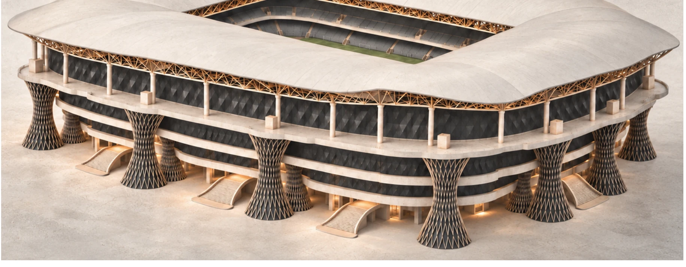
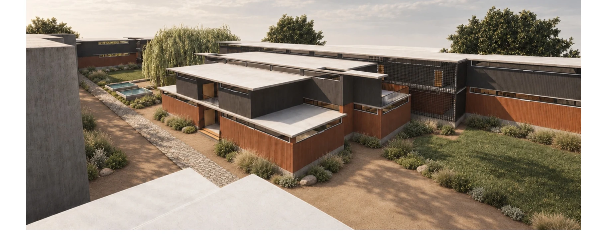
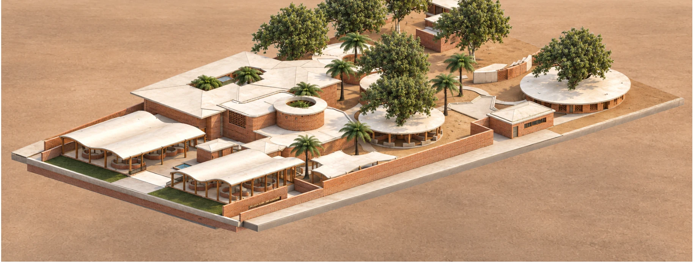
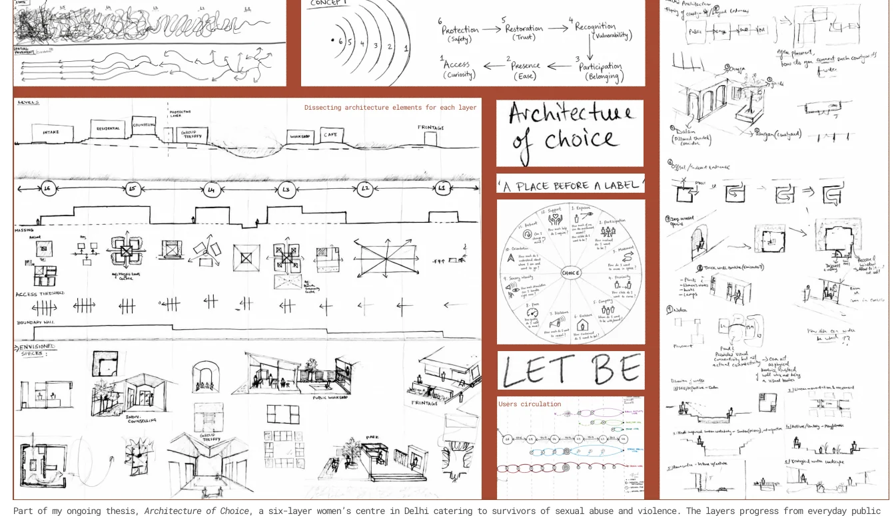

SELECTED WORKS · 2022—2026 01 / 06
RESEARCHINTO SPACE.
Exploring how human behaviour, perception and research can shape the spaces we inhabit.



DESIGN AS A PROCESS OF INQUIRY ↗
FIG. 01 — SELECTED ARCHITECTURAL INVESTIGATIONS
EXPLORE SELECTED WORKS
BENGALURU, INDIA · B.ARCH / FIFTH YEAR
01 / INDEX
SELECTED
SELECTED
WORKS.
Six bodies of work spanning architecture, urban inquiry, technical precision and creative exploration.
END OF SELECTED WORKS INDEX06 / 06
02 / AN APPROACH TO DESIGN12.9716° N / 77.5946° E
DESIGN PHILOSOPHY
A SPACE IS MORE THAN WHAT IT LOOKS LIKE.
My practice begins with research into cognitive neuroscience, human behaviour and spatial perception — translating observations into deliberate decisions about form, movement and experience.
OBSERVE → INTERPRET → TRANSLATERESEARCH-LED ARCHITECTURE
03 / ONGOING INQUIRYTHESIS / 2026

PROCESS / NOT JUST PRODUCT ↗
ONGOING THESISARCHITECTURE
ARCHITECTURE
OF CHOICE.
A six-layer women’s centre in Delhi for survivors of sexual abuse and violence. The research investigates how spatial progression can support different degrees of visibility, participation, and retreat.